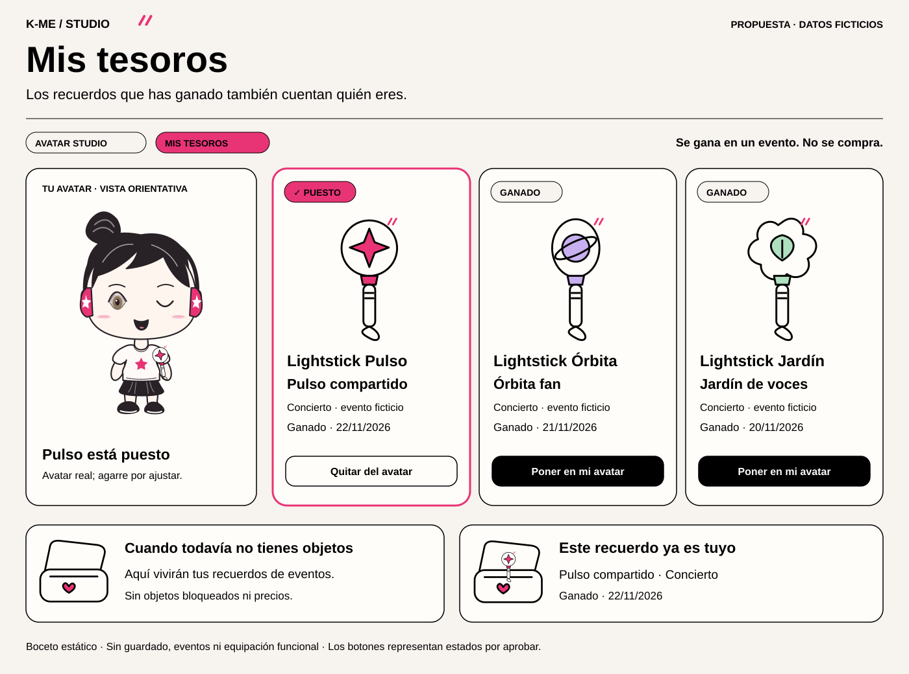
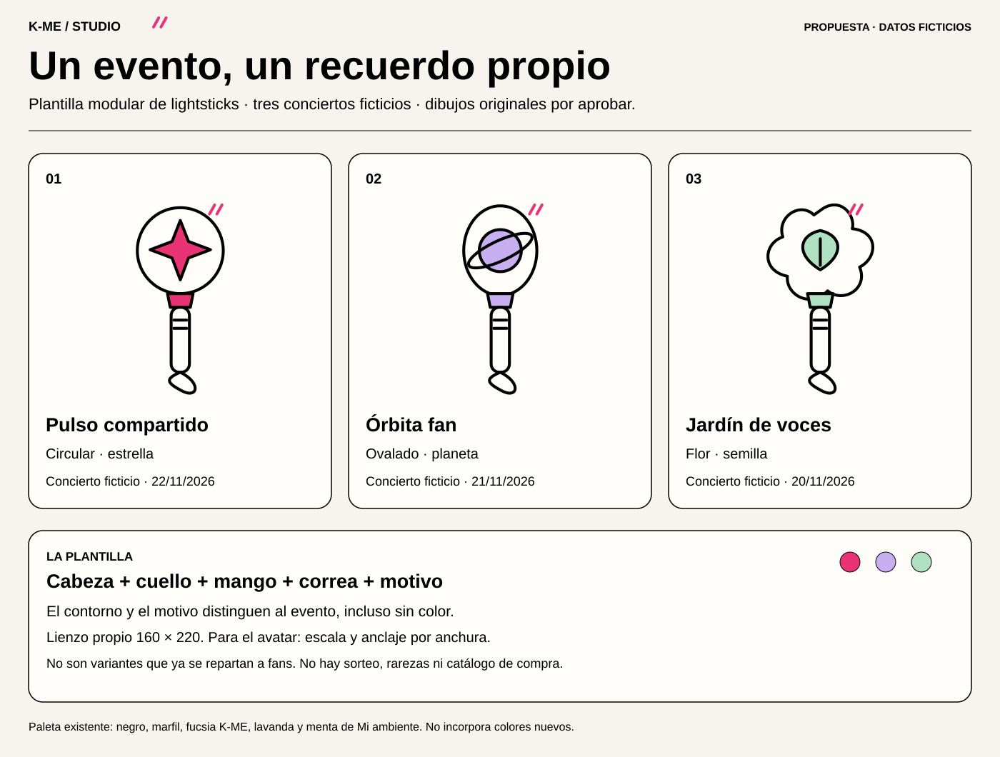
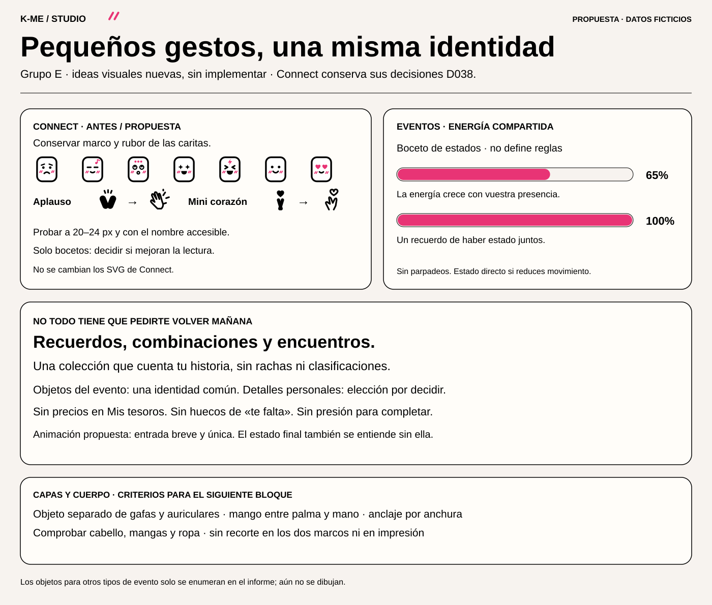

Mis tesoros · propuesta para revisar
Diseño pendiente de aprobación · datos ficticios. Estos son dibujos estáticos. Poner y quitar no funcionan todavía; no hay premios, eventos ni guardado por cuenta. El avatar es el del editor actual, con una superposición orientativa; no acredita el ajuste final de mano y capas.



Otros objetos posibles, solo como ideas sin dibujar: broche de pincel para un taller, charm de nudo para un encuentro local, pulsera de ritmo para baile y etiqueta de estuche para un encuentro de intercambio. Sus eventos y reglas no están decididos.
Leer revisión, fuentes, aprobaciones, contradicciones y siguiente bloque de tests.